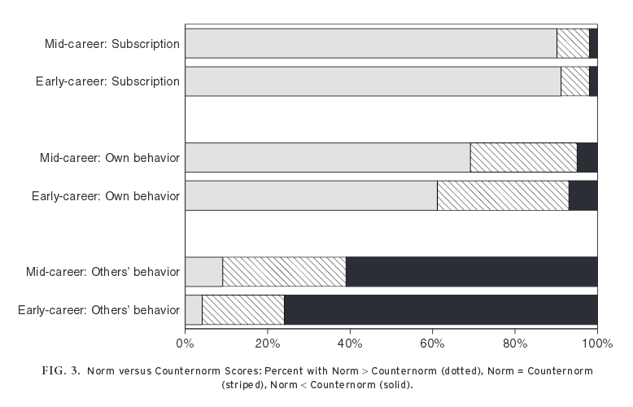
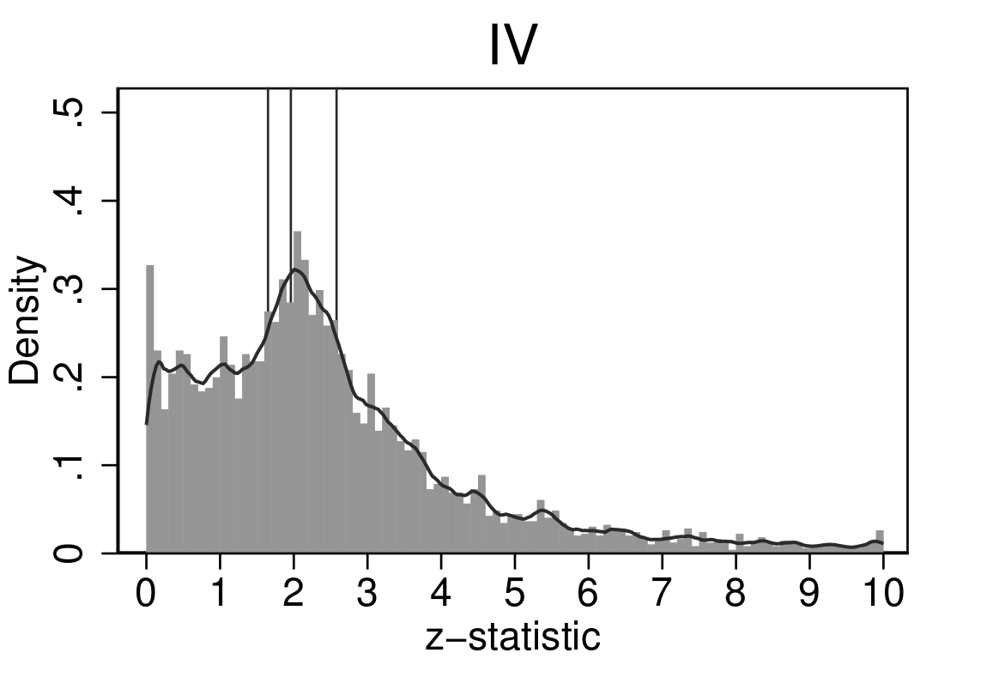

4 Figura: Normals versus contranormas

Nota: Esta figura fue tomada del artículo de (anderson2007normative?).
La figura muestra los porcentajes de los científicos en dos etapas de su carrera (media y temprana) que tienen puntuaciones normativas y contranormativas en tres categorías: suscripción, comportamiento propio y comportamiento de otros.
- Suscripción a Normas (Subscription):
- Carrera media: La mayoría (aproximadamente 90%) de los científicos en esta etapa suscriben a las normas (barra gris), con muy pocos teniendo puntuaciones iguales (rayada) o menores (negra) en comparación con las contranormas.
- Carrera temprana: Similar a los científicos de carrera media, una gran mayoría suscriben a las normas, con pocos teniendo puntuaciones iguales o menores en comparación con las contranormas.
- Comportamiento Propio (Own Behavior):
- Carrera media: Aunque la mayoría de los científicos tienen puntuaciones normativas mayores que las contranormativas, hay una proporción significativa con puntuaciones iguales o menores en comparación con las contranormas.
- Carrera temprana: Un patrón similar al de los científicos de carrera media, pero con una mayor proporción de científicos con puntuaciones iguales o menores en comparación con las contranormas.
- Comportamiento de Otros (Others’ Behavior):
- Carrera media: Una mayoría de los científicos perciben el comportamiento típico de otros científicos como más contranormativo que normativo.
- Carrera temprana: Una percepción aún más marcada que en los científicos de carrera media, con una gran mayoría percibiendo el comportamiento de otros como más contranormativo que normativo.
4.0.1 Interpretación:
- Dissonancia Normativa: Existe una disonancia significativa entre los ideales normativos y las percepciones del comportamiento real, tanto propio como de otros, siendo más pronunciada en la percepción del comportamiento de otros científicos.
- Efecto de la Competencia: Los científicos en ambientes más competitivos tienden a ver un comportamiento más contranormativo.
- Tensión en la Ciencia: La discrepancia entre los ideales y las percepciones del comportamiento real crea una fuente persistente de tensión y estrés en la comunidad científica.
Esta figura subraya la desconexión entre las normas a las que los científicos suscriben y lo que perciben como el comportamiento típico, especialmente en el comportamiento de otros científicos, lo que refleja la disonancia normativa en el entorno de investigación.

4.2 En la Practica (Anderson et al 2007)

El sesgo de publicacion ocurre cuando los estudios publicados en revistas cientificas estan sobrerepresentados por estudios que obtienen un particular tipo de restultados (e.g., rechazan la hipotesis nula).
Evidencia que sugiere la existencia de sesgo de publicacion:
El tamaño de los efectos disminuye con el tamaño muestral (Gerber et al 2001).
La publicación de efectos nulos esta desapareciendo en el tiempo, en todas las disciplinas (Fanelli 2011).
Evidencia que mide la magnitud del sesgo de publicación:
Estudio que siguió a experimentos completados muestra que aquellos experimentos con fuertes resultados son 40pp más probable de ser publicados, y 60pp más probable de ser escritos. Alto “file drawer problem”. (Franco et al 2014)
En economía Andrews and Kasy (2019) estiman que, para algunas literaturas, los estudios que rechazan la nula son entre 3 y 30 (!) veces mas probables de ser publicados en journals top.
4.3 Sesgo de Publicacion en TESS/NSF (Franco et al 2014)

4.4 Problema #2: P-Hacking
.font140[
- Definición: flexibilidad en el análisis de datos permite presentar casi cualquier resultado bajo un umbral arbitrario; significancia estadística pierde sentido.
Otros nombres: “specification searching” (Leamer 1983), “data-fishing”, grados de libertad del investigador, o “data-mining”.
No implica intencionalidad. Puede ser subconsciente, o simplemente una practica estándar del análisis estadístico (Gelman and Loken 2013).
Evidencia: comportamiento anomalo de test estadisticos entorno a umbrales arbitrarios.


- Registros (o pre-pregistros)
- Planes de pre-analysis
- Reportes registrados ]
4.4.1 Modelo de Ioannidis: Framework para Hallazgos Falsos Positivos
El modelo de Ioannidis, también conocido como “Why Most Published Research Findings Are False”, proporciona un marco teórico para entender por qué una gran proporción de los hallazgos científicos pueden ser falsos positivos. Este modelo se fundamenta en la estadística bayesiana y en varias consideraciones prácticas del proceso de investigación.
4.4.1.1 Premisas Básicas del Modelo
Claro, aquí tienes una tabla en Markdown que presenta los falsos positivos, verdaderos positivos, falsos negativos y verdaderos negativos, junto con sus respectivas notaciones típicas (\(\alpha\), \(1 - \beta\), etc.).
| Resultado del Estudio / Realidad | Hipótesis Verdadera (\(H_1\)) | Hipótesis Falsa (\(H_0\)) |
|---|---|---|
| Resultado Significativo | Verdaderos Positivos (\(1 - \beta\)) | Falsos Positivos (\(\alpha\)) |
| Resultado No Significativo | Falsos Negativos (\(\beta\)) | Verdaderos Negativos (\(1 - \alpha\)) |
- Verdaderos Positivos (\(1 - \beta\)): La probabilidad de que el estudio detecte un efecto verdadero cuando realmente existe.
- Falsos Positivos (\(\alpha\)): La probabilidad de que el estudio indique un efecto significativo cuando en realidad no existe.
- Falsos Negativos (\(\beta\)): La probabilidad de que el estudio no detecte un efecto cuando realmente existe.
- Verdaderos Negativos (\(1 - \alpha\)): La probabilidad de que el estudio no indique un efecto significativo cuando realmente no existe.
- Potencia del estudio (Power, \(1 - \beta\)): La probabilidad de que un estudio detecte un verdadero efecto cuando este existe.
- Nivel de significancia (\(\alpha\)): El umbral para rechazar la hipótesis nula. Comúnmente se utiliza \(\alpha = 0.05\).
- Proporción de hipótesis verdaderas (\(R\)): La proporción de todas las hipótesis investigadas que son realmente verdaderas.
- Sesgo (Bias, \(u\)): Factores que pueden aumentar la probabilidad de obtener resultados significativos debido a errores sistemáticos.
4.4.1.2 Probabilidad Post-Hoc de un Hallazgo Verdadero
La probabilidad post-hoc de que un hallazgo sea verdadero se puede expresar utilizando el teorema de Bayes:
\[ P(V | S) = \frac{P(S | V) \cdot P(V)}{P(S)} \]
Donde: - \(P(V | S)\) es la probabilidad de que el hallazgo sea verdadero dado que es significativo. - \(P(S | V)\) es la probabilidad de obtener un resultado significativo si el hallazgo es verdadero (la potencia del estudio). - \(P(V)\) es la probabilidad previa de que el hallazgo sea verdadero (relacionado con \(R\)). - \(P(S)\) es la probabilidad de obtener un resultado significativo.
4.4.1.3 Derivación Bayesiana
Para calcular \(P(V | S)\), necesitamos los siguientes componentes:
- Probabilidad de obtener un resultado significativo si el hallazgo es verdadero:
\[ P(S | V) = 1 - \beta \]
- Probabilidad de obtener un resultado significativo si el hallazgo es falso:
\[ P(S | F) = \alpha \]
- Probabilidad previa de que un hallazgo sea verdadero:
\[ P(V) = R \]
- Probabilidad previa de que un hallazgo sea falso:
\[ P(F) = 1 - R \]
Usando el teorema de Bayes, la probabilidad post-hoc de que un hallazgo sea verdadero es:
\[PPV = P(V | S) = \frac{(1 - \beta) \cdot R}{(1 - \beta) \cdot R + \alpha \cdot (1 - R)} \]
Ioannidis llama a esto como el valor predictivo positivo (positive predicted value)
XXX Explicacion de como funciona la formula
4.4.1.4 Consideraciones del Sesgo
El sesgo puede incrementar la probabilidad de obtener resultados significativos, tanto si el hallazgo es verdadero como si es falso. Si consideramos un sesgo \(u\), la probabilidad de obtener un resultado significativo se ajusta de la siguiente manera:
\[ P(S | F, \text{sesgo}) = \alpha + u \]
Incorporando el sesgo en la fórmula de Bayes:
\[ P(V | S) = \frac{(1 - \beta) \cdot R}{(1 - \beta) \cdot R + (\alpha + u) \cdot (1 - R)} \]
4.4.1.5 Implicaciones del Modelo
El modelo de Ioannidis muestra que la probabilidad de que un hallazgo sea verdadero depende críticamente de la potencia del estudio, el nivel de significancia, la proporción de hipótesis verdaderas y el sesgo. Algunas de las implicaciones clave son:
- Bajo \(R\): Si la proporción de hipótesis verdaderas es baja, incluso estudios con alta potencia y bajos niveles de significancia tendrán una alta tasa de falsos positivos.
- Sesgo alto: Aumenta la probabilidad de falsos positivos, reduciendo la credibilidad de los hallazgos significativos.
- Necesidad de replicación: Para aumentar la credibilidad de los hallazgos, es esencial replicar estudios y aumentar el tamaño de la muestra.
Este marco destaca la importancia de diseñar estudios con alta potencia, usar niveles de significancia adecuados y minimizar el sesgo para mejorar la veracidad de los hallazgos científicos.